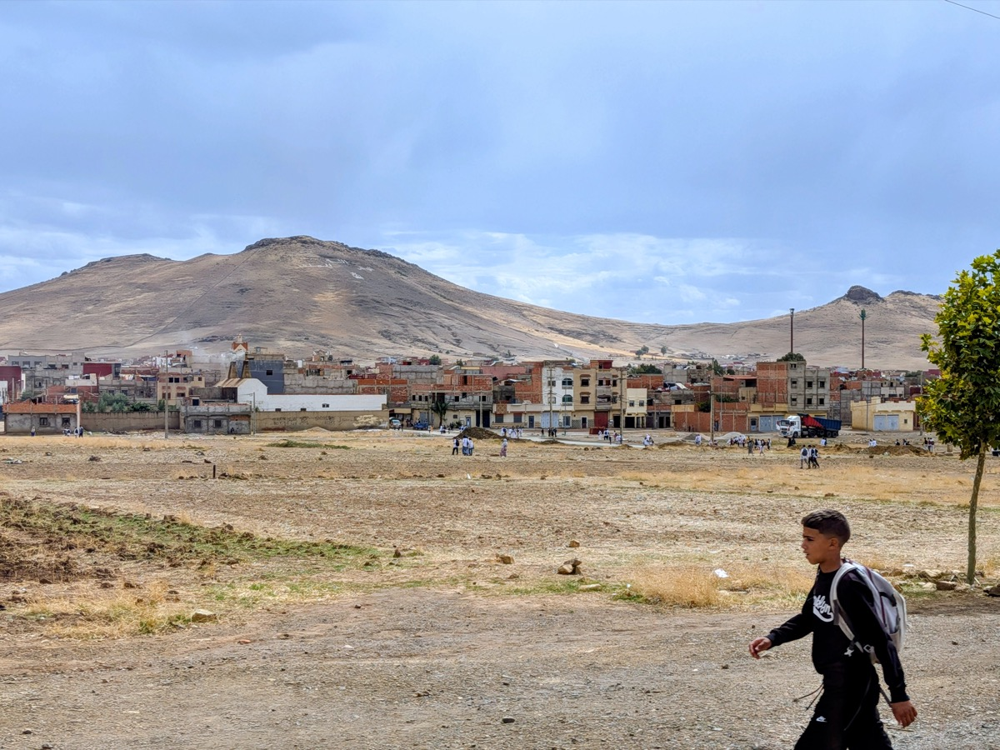
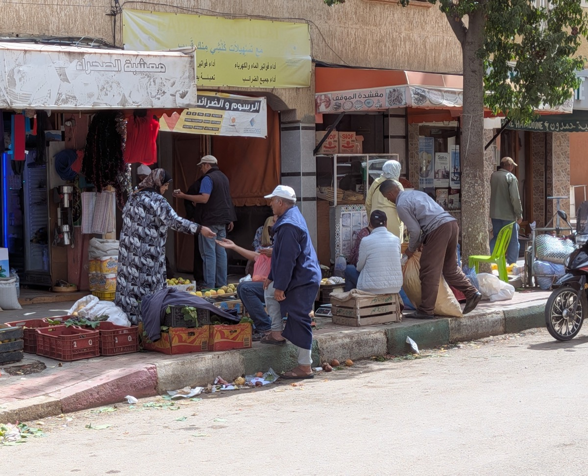
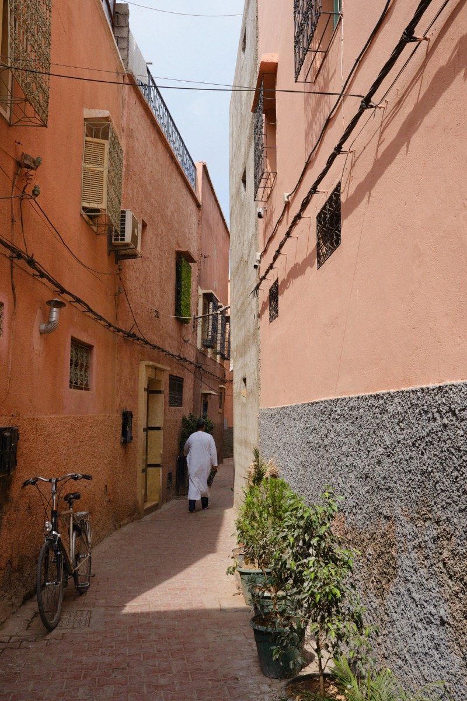
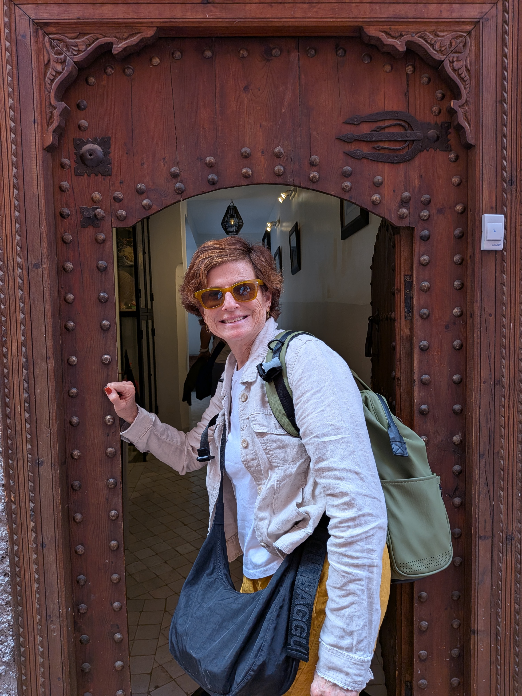
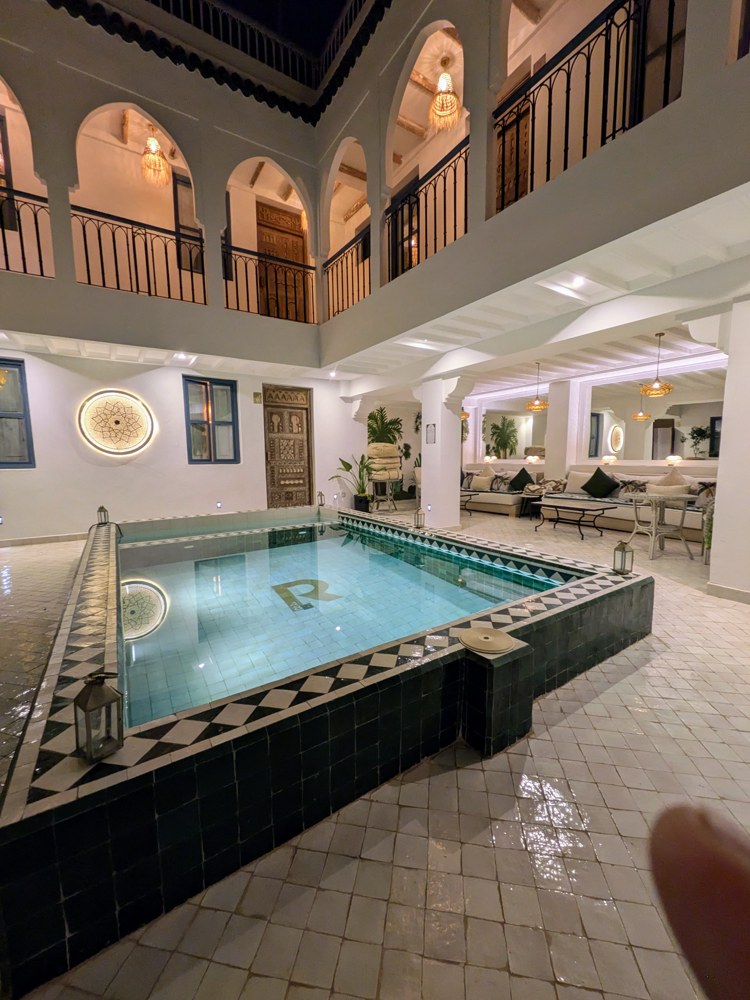
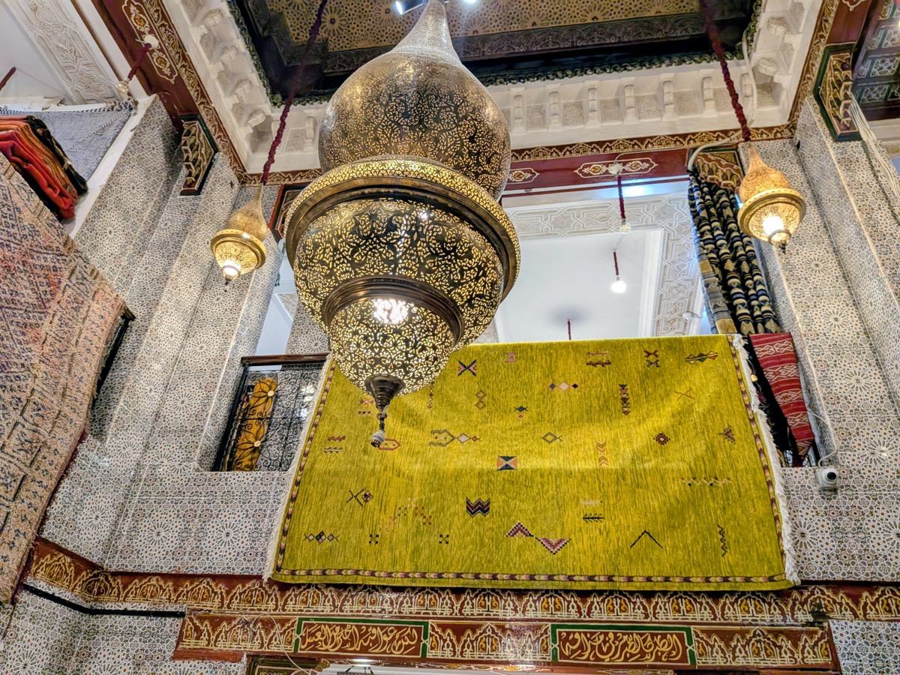
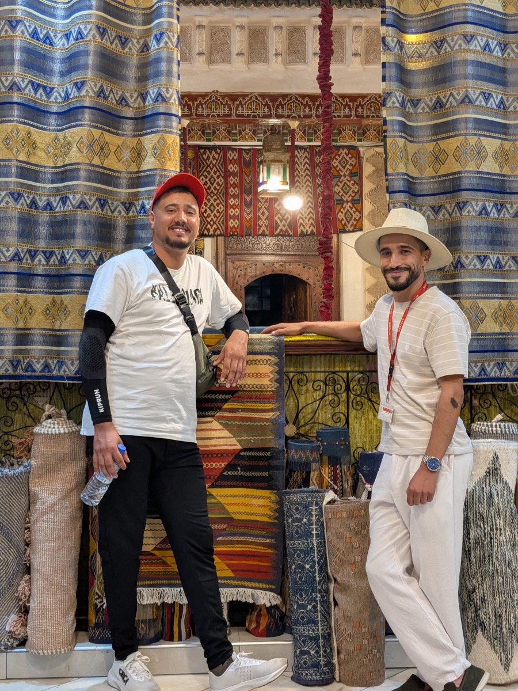
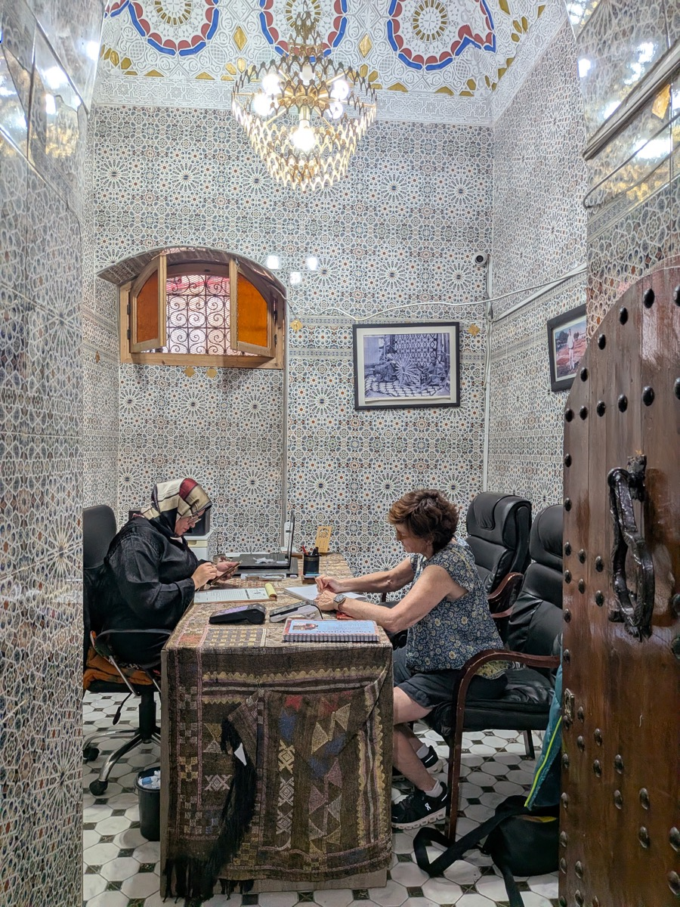
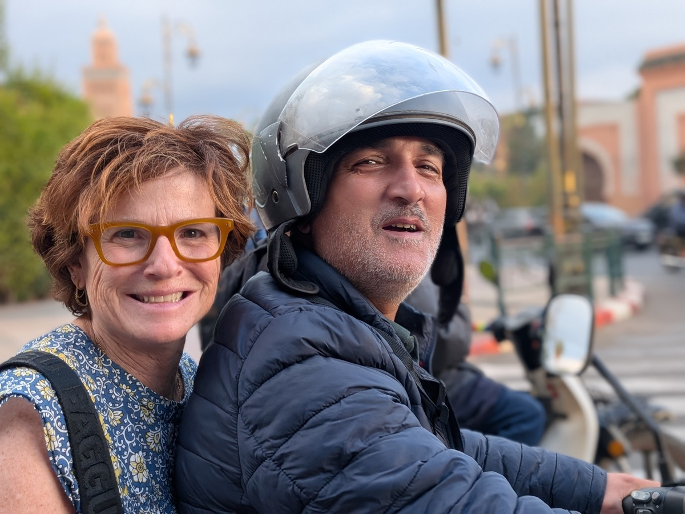
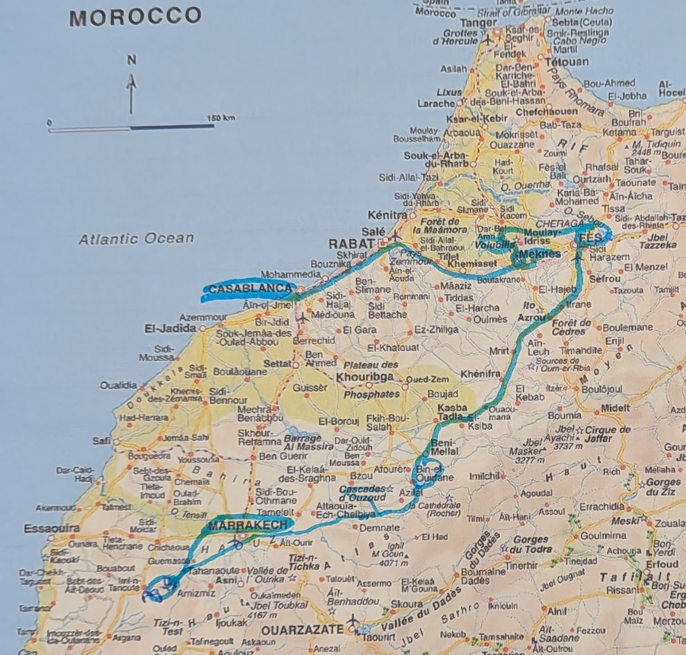

This is the second set of photos from Morocco. You can start with Part 1 and also check out Jardin Marjorelle.
7. Rural Morocco
Travel in Morocco is slow. The roads vary in quality and pass through every town along the way. One some days, we spent six hours bumping along in our tour van. Yet it was eye-opening to see how people live. For examples, donkeys are really used (and quite useful in narrow souks). Olive trees are abundant. Half-completed construction is everywhere. We often saw school childen coming or going. Although one could fly or take a train between cities, seeing life outside the cities added to our experience, as did stopping for rest breaks at rural cafes (often in gas stations).


8. Camels
One night we stayed in a desert near Marrakech, which was not the Sahara. In particular, The Agafay desert does not have sand dunes. And it was a bit stormy, so we also did not get to experience the starry sky. But it was fun to glamp in tent cabins and our morning camel ride was a fun once-in-a-lifetime expeiences.


9. Riad
Inside the medina, you can stay at hotels in traditional Moroccan houses and we loved this. The one in Marrakesh was off a small street, down 3-4 alleys, and we began to wonder “where are we going? Surely there’s no place nice to stay!” A door opens, literally a hole in the wall. And still all you see inside is a dark corridor. Muslims really value their privacy. And then our riad opened into a paradise with interior tile, water fountains, plants, a pet turtle, and beautiful modern accomodations.



10. Bahia Palace
Everywhere in Morocco you see colorful geometric tile. The Bahia Palace was super crowded, yet had the most abundant, well-kept and amazing examples.


11. Color !!!
Of course, Morocco was wonderful as a photographer. Here’s a collection of photos that I like just because they are colorful. You can click on an image to get a bigger version.


12. Carpet shopping
Yes! We did it. We bought a carpet. And it was a fun experience. We drank the mint tea. Pile and piles of carpets were laid before us. We then went back through the pile to reject some and keep others under considerations. We decided. Audrey drove a hard bargain and got 38% off the asking price. Woo hoo!



Afterwards we were exhausted and risked a motorbike ride through the medina from the carpet guys. It was an exhilerating close to the trip.

The Essentials
9 days
Intrepid Travel
Royal Air Maroc
